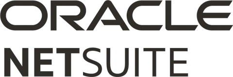

Fechamento01
O mês fecha e ninguém sabe explicar
O saldo subiu e o resultado caiu, ou o contrário. E ninguém sabe dizer por quê.
- Fechamento sem data: o número muda depois
- Extrato como única fonte da verdade
- Resultado que só aparece quando já passou
Diagnóstico da gestão financeira
Você responde a um questionário e a leitura aparece na tela, no fim. Cerca de 8 minutos, sem planilha e sem cartão.
Já sou cliente →5dimensões avaliadas
8 mindo cadastro à leitura
32telas de análise
Ideal para uso com



O problema
Não falta dado. Falta leitura. Três coisas aparecem em quase toda empresa que chega até nós, e nenhuma delas se resolve com mais planilha.
Fechamento01
O saldo subiu e o resultado caiu, ou o contrário. E ninguém sabe dizer por quê.
Decisão02
Contratar, comprar, cortar. Tudo parado esperando uma planilha que chega tarde.
Prioridade03
Todo dono sabe o que está errado. O que ninguém sabe é por onde começar.
Etapa 2 · depois do diagnóstico
Quem segue com a gente conecta os dados uma vez, e o financeiro passa a viver aqui, atualizado a cada fechamento de mês. Não é outro produto: é o mesmo, com o seu número dentro.
Etapa 1 · o diagnóstico
Cinco dimensões da sua gestão, cada uma com o degrau em que ela está hoje. Sem nota e sem ranking: nota vira placar, e placar não diz o que fazer na segunda-feira.
Exemplo de leitura
Distribuidora Andrade Ltda.
Como funciona
Não há como fechar o mês sem conciliar, nem conciliar sem registro. Por isso a leitura sai em ordem, da base para o topo.
Nome, e-mail e o CNPJ. É o que basta para abrir o questionário na hora.
≈ 1 minuto
Múltipla escolha, sobre registro, fechamento, resultado e decisão. Cada resposta é salva quando você a dá.
≈ 7 minutos · dá para pausar
As cinco dimensões da sua gestão, cada uma com o degrau em que está, e qual delas trava as outras.
Na tela, na hora
Antes de começar
Isso não é pré-requisito: é a primeira coisa que o diagnóstico mede. Registro e rastreabilidade é uma das cinco dimensões, e a maioria começa nela sem estar pronta.
O contador entrega a obrigação fiscal, e faz bem. O diagnóstico olha outra coisa: se o número chega a tempo de virar decisão, e se alguém o usa para decidir.
São perguntas de múltipla escolha e cada resposta é gravada quando você a dá. Dá para parar no meio e voltar pelo mesmo link, sem perder nada.
Não, e vale dizer com clareza. O questionário entrega a leitura das cinco dimensões, na hora. As telas do sistema são o passo seguinte, para quem decide seguir: os dados são conectados uma vez e passam a se atualizar a cada fechamento.
O ERP registra a operação; isto lê o resultado dela. E lê a partir do dado que o seu ERP já tem: nada é trocado, nada é reimplantado.
Não existe nota, e não existe ranking. O que sai é onde cada dimensão está hoje e a ordem de resolver, porque não há como fechar o mês sem conciliar, nem conciliar sem registro.
Comece agora
Comece pelo cadastro. O questionário abre em seguida, e a leitura vem no fim dele. Sem compromisso: você responde, lê o resultado e decide o que fazer com ele.